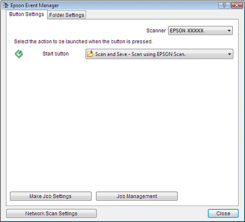

powoduje uruchomienie wybranego wcześniej programu. Otwierane domyślnie programy i wykonywane czynności są opisane w poniższej tabeli.
powoduje uruchomienie wybranego wcześniej programu. Otwierane domyślnie programy i wykonywane czynności są opisane w poniższej tabeli. |
||
 |
||
Przypisywanie programu do przycisku skanera
Przycisk Start powoduje uruchomienie wybranego wcześniej programu. Otwierane domyślnie programy i wykonywane czynności są opisane w poniższej tabeli.
powoduje uruchomienie wybranego wcześniej programu. Otwierane domyślnie programy i wykonywane czynności są opisane w poniższej tabeli.|
Przycisk
|
Domyślna czynność
|
|
Start |
Uruchamia program Epson Scan.
|
Przypisywanie programu projektowego do przycisku skanera w programie Epson Event Manager
Można przypisać przycisk Start do otwierania programu w Epson Event Manager, aby skanowanie projektów było jeszcze szybsze.
do otwierania programu w Epson Event Manager, aby skanowanie projektów było jeszcze szybsze. |
Aby uruchomić program Epson Event Manager, należy wykonać jedną z poniższych czynności:
|
Windows 8.1/Windows 8:
Wprowadź nazwę oprogramowania w panelu search (szukaj), a następnie wybierz wyświetloną ikonę.
Wprowadź nazwę oprogramowania w panelu search (szukaj), a następnie wybierz wyświetloną ikonę.
Windows 7/Windows Vista/Windows XP:
Kliknij przycisk start, a następnie wybierz All Programs (Wszystkie programy) lub Programs (Programy) > EPSON Software > Event Manager.
Kliknij przycisk start, a następnie wybierz All Programs (Wszystkie programy) lub Programs (Programy) > EPSON Software > Event Manager.
Mac OS X:
Wybierz Go (Przejdź) > Applications (Aplikacje) > Epson Software > Event Manager.
Wybierz Go (Przejdź) > Applications (Aplikacje) > Epson Software > Event Manager.
Następuje wyświetlenie karty Button Settings w programie Epson Event Manager.

 |
Na liście znajdującej się obok nazwy przycisku kliknij strzałkę, a następnie wybierz czynność, którą chcesz przypisać.
|
 |
Kliknij przycisk Close (Zamknij), aby zamknąć okno Epson Event Manager.
|
Po każdym naciśnięciu wskazanego przycisku będzie wykonywana wybrana czynność.
 Uwaga:
Uwaga:|
Aby uzyskać pomoc w korzystaniu z programu Epson Event Manager, wykonaj jedną z poniższych czynności.
W systemie Windows: Kliknij ikonę w prawym górnym rogu ekranu. System Mac OS X: Wybierz opcję Help (Pomoc) z menu, a następnie Epson Event Manager Help (Pomoc dla Epson Event Manager). |